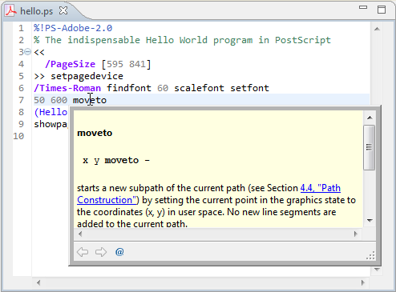

Window
> Open Perspective > Other... > Postscript
to open the PostScript perspective. It contains all what you will
probably need for PostScript editing.
Window
> Open Perspective > Other... > Postscript
to open the PostScript perspective. It contains all what you will
probably need for PostScript editing.
Select
Window
> Open Perspective > Other... > Postscript
to open the PostScript perspective. It contains all what you will
probably need for PostScript editing.

There is no special kind of project needed for PostScript development.
You can reuse any kind of project, or just select
File
> New > Project > General > Project
to create a new general project.
Select
File
> New > File
to create new file. Make sure the file name has extension ".ps" or
".eps".
Enter some PostScript code, or just copy and paste this:
%!PS-Adobe-2.0 % The indispensable Hello World program in PostScript << /PageSize [595 841] >> setpagedevice /Times-Roman findfont 60 scalefont setfont 50 600 moveto (Hello World) show showpage
Notice the syntax highlighting. Different kinds of elements in the PostScript are rendered in unique colors:
Notice also the code folding you get for multi-line procedures {...}, arrays [...] and dictionaries <<...>>.
Hover the mouse over a name in the editor. A tooltip with the corresponding documentation will pop up.
Move the mouse over a name in the editor while holding the Control key. The name will become a clickable hyperlink.

Click it and you will get the corresponding documentation showing up in a browser.

The Outline view shows the hierarchical structure of the PostScript code.